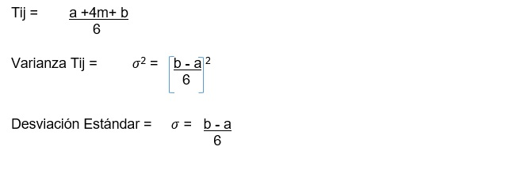
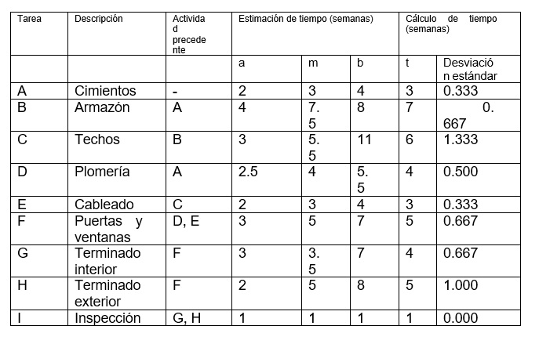
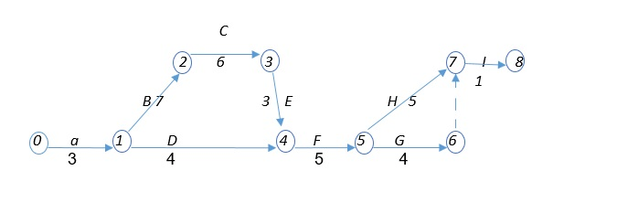

CPM supone que la duración de cada actividad se conoce con certeza. Para muchos proyectos, esto claramente no es aplicable. PERT probabilístico es un intento por corregir esta deficiencia de CPM modelando la duración de cada actividad como una variable aleatoria. Para cada actividad, PERT requiere que el administrador de proyecto estime las tres cantidades siguientes:
a = estimación de la duración de la actividad en las condiciones más favorables.
b = estimación de la duración de la actividad en las condiciones menos favorables.
m = valor más probable para la duración de la actividad.
PERT requiere la suposición de que Tij sigue una distribución beta. Si Tij sigue una distribución beta, entonces se puede demostrar que la media y la varianza de Tij, se podría aproximar por:

Elaboración propia
PERT requiere la suposición de que las duraciones de las actividades son independientes.
Sea CP la variable aleatoria que denota la duración total de las actividades en una trayectoria crítica encontrada por CPM y PERT supone que la trayectoria crítica encontrada por CPM contiene suficientes actividades que permiten invocar el Teorema del límite central y concluir que la ruta crítica está normalmente distribuida.
Con esta suposición se pueden usar para contestar preguntas relacionadas con la probabilidad de que el proyecto se complete en una fecha específica [8].
Considere el problema de Home Construction, Inc., una compañía que construye casas para una sola familia. Como en el caso determinístico, el gerente de construcción debe primero identificar las principales tareas como se muestra en la tabla:

Elaboración propia
Los tiempos de terminación de estas tareas son bastante variables debido a la incertidumbre de las condiciones climatológicas, la obtención de suministros, el mantenimiento de las relaciones laborales, etc. Así pues, una sola estimación del tiempo no es apropiada.
En la práctica, la distribución real del tiempo de terminación del proyecto se aproxima mediante una distribución normal.

Elaboración propia
El tiempo de terminación real puede variar debido a que los tiempos de terminación de las tareas son variables. Puesto que el tiempo de terminación esperado es de 30 semanas, hasta cierto grado, no es confiable. El gerente de construcción deberá hacerse preguntas como las siguientes:
a. ¿Cuál es la probabilidad de construir la casa en 32 semanas o menos?
Z = (32 – 30)/1.972 = 1.014
La probabilidad es del 84.47%
b. ¿Cuál es la fecha última de terminación en la cual usted tiene una confianza del 95% de cumplir?
En la tabla normal se obtiene el valor de Z de 1.645, para lo cual el área que está a la izquierda es de 0.95 Puede ahora calcular el valor de X, a partir de la definición de Z, de la manera siguiente:
Z = 1.645 = (X – media)/desv. est = (X – 30)/ 1.972
Resolviendo para X se tiene:
X = (1.972) (1.645) + 30 = 33.24
Usted puede tener el 95% de confianza de cumplir en una fecha meta con un tiempo de terminación de 33.24 semanas [9].